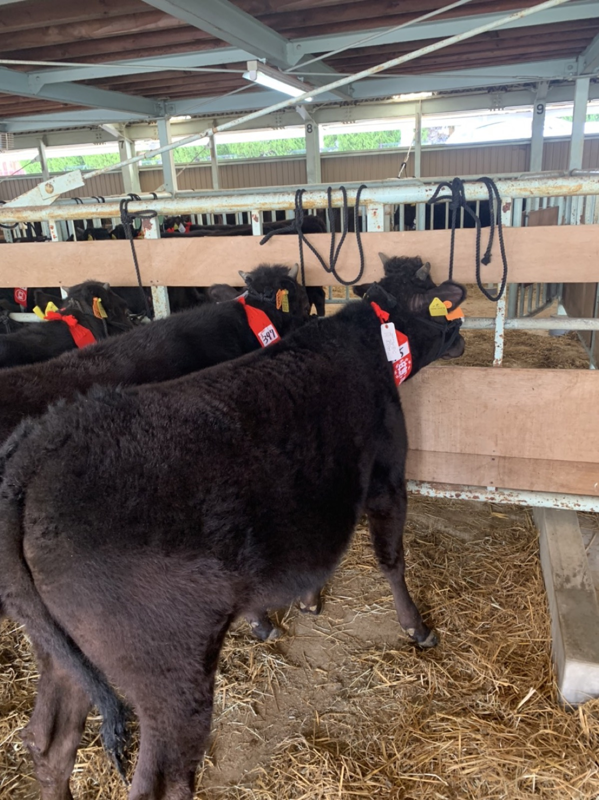
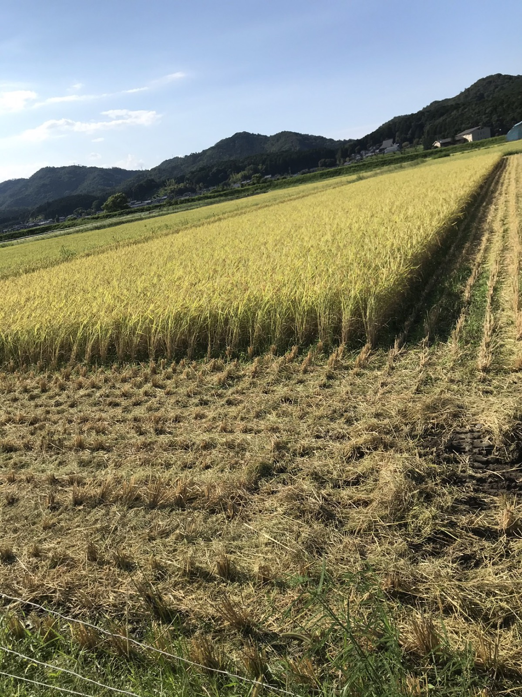
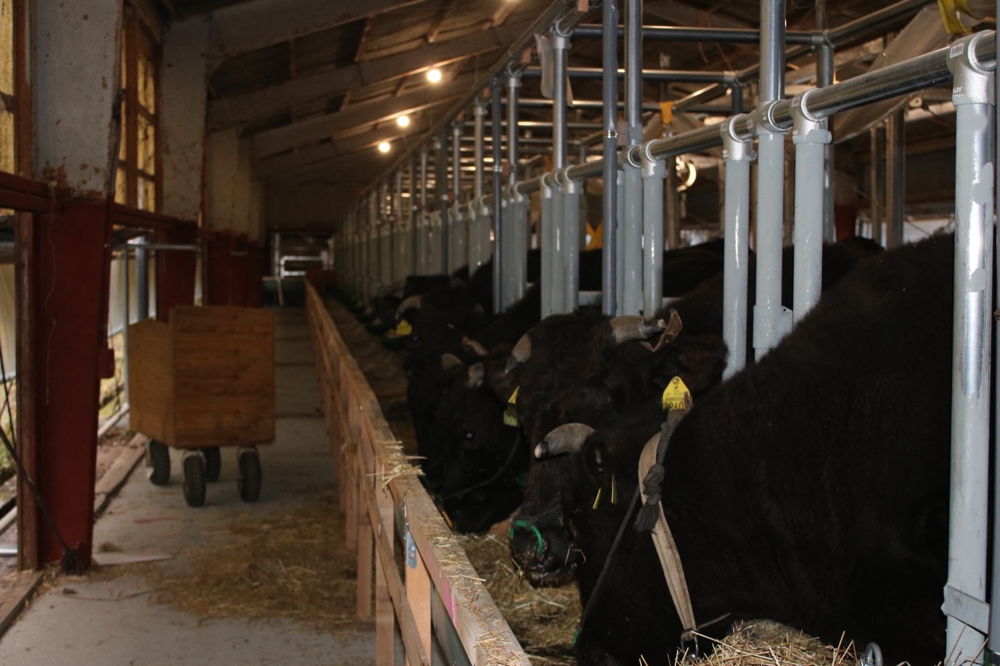

丹波の食材を全国へ、世界へ

株式会社丹波農商は、兵庫県丹波市市島町で生まれ育った従兄弟ふたりが2019年に立ち上げた農業法人です。
但馬牛の繁殖、牛が食べる牧草づくり、牛の堆肥づくり、その堆肥で育てる米と丹波栗、そして食品加工まで。ひとつひとつを別の仕事にせず、ひとつの農場の中でつないでいます。
経営理念は「農業で人々の幸せに貢献する」。ミッションは「農業で丹波を元気に」。耕作放棄地を田畑に戻し、地域の農家さんと一緒に、丹波の食材を全国へ、そして世界へ届けていきます。
牛が食べる草は、自分たちの田んぼで育てる。
牛の堆肥は、田畑に還す。
田んぼから出た稲わらともみ殻は、また牛のもとへ。
 01
01
耕作放棄地や水田を耕し、牛が食べる国産の牧草を自分たちで作ります。丹波市と福知山市大江町であわせて約33ha。

02その牧草を食べて、但馬牛の母牛と仔牛が育ちます。2019年の2頭から始まり、いまは約65頭。
 03
03
牛舎の牛ふんともみ殻を切り返して堆肥に。自社の田畑と、地域の農家さんの田畑に年間約1,000tを散布しています。

04堆肥で土をつくり、農薬や化学肥料を控えて、コシヒカリや丹波栗、野菜を育てます。
 05
05
グループの飲食店で炊くお米は、すべてここで育てたもの。丹波栗は大阪・東京の飲食店や和菓子店へ届けています。
そして、稲刈りで出た稲わらともみ殻は、牛の敷料や堆肥としてまた牛舎へ戻ります。

グループ会社の株式会社丹波土匠が担当。耕作放棄地や水田で牧草をつくり、2026年は約33ha・約1,000ロール。国産の牧草を多くの農家さんに使ってもらうことが目標です。

丹波産コシヒカリの栽培に加え、地域の田んぼの稲刈り・乾燥・籾摺りを請け負い、精米して販売しています。昼夜の寒暖差が甘みともちもち感を生みます。

自分たちで育てた食材を、加工場で下ごしらえしてグループの飲食店へ。丹波栗の渋皮煮なども手づくりしています。

代表の大塩は、丹波の高見牧場で3年間修行してから独立しました。
仔牛は早期離乳をせず、なるべく母牛の乳で育てます。はじめに免疫をしっかりつけることが、病気に強い牛への近道だと考えています。
初めてお産をする母牛は、つなぎ牛舎ではなく個室で。ストレスを減らし、落ち着いてお産に臨めるようにしています。
毎日こまめに体調を見て、エサの食べ方や様子の変化をすぐにつかむ。元気で、病気に強い牛を育てることを何より大切にしています。

丹波市市島町出身。高校卒業後、兄が営む飲食店に入社し、自分の料理でお客様に喜んでもらう楽しさを知る。食材から自分でつくりたいと地元に戻り、高見牧場で3年間修行。2019年に独立。
丹波市市島町出身。大学卒業後、商社で営業として働くうち、自信を持って売れるものを自分でつくりたいと就農を決意。日本一の米農家での修行を経て、従兄の大塩と2019年に会社を設立。株式会社丹波土匠の代表も務める。
秋山 龍の輔 牧草・米
栗原 直人 堆肥（土壌医検定2級）
栗原 亜実 食品加工・栗の販売
| 会社名 | 株式会社丹波農商 |
|---|---|
| 代表取締役 | 大塩 敦史 |
| 取締役 | 栗原 優介 |
| 所在地 | 兵庫県丹波市市島町下竹田2055-3 |
| 電話 | 0795-86-0068 |
| 設立 | 2019年10月 |
| 資本金 | 1,000万円 |
| 事業 | 但馬牛の繁殖、米・丹波栗・野菜の生産、堆肥の製造・散布、稲作の作業受託、食品加工 |
| グループ会社 | 株式会社丹波土匠（牧草の生産） 株式会社アゲル（飲食店「天ぷらとワイン大塩」ほか） |